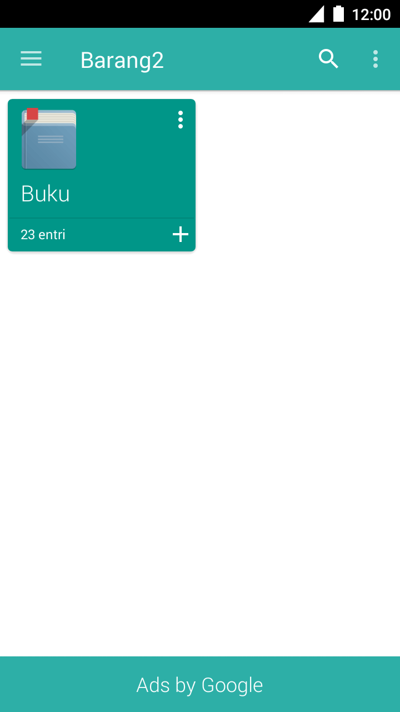
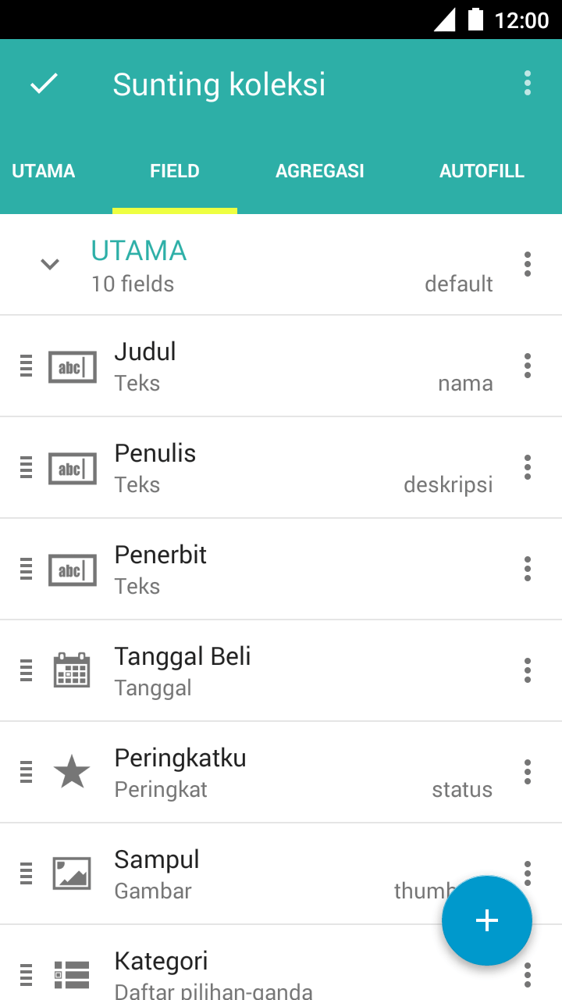
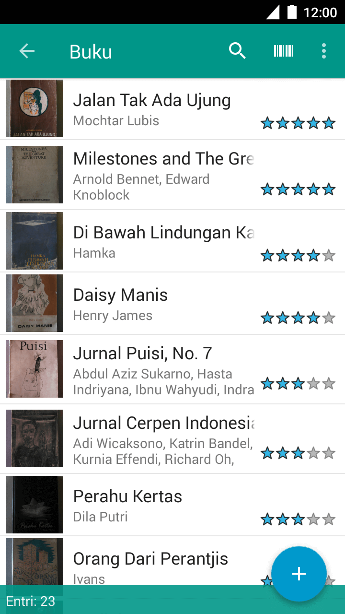
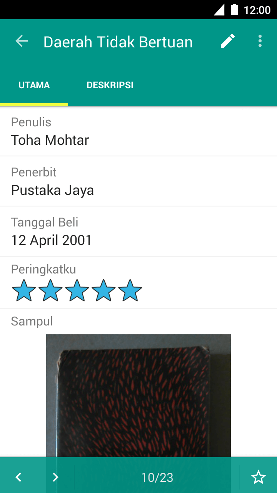
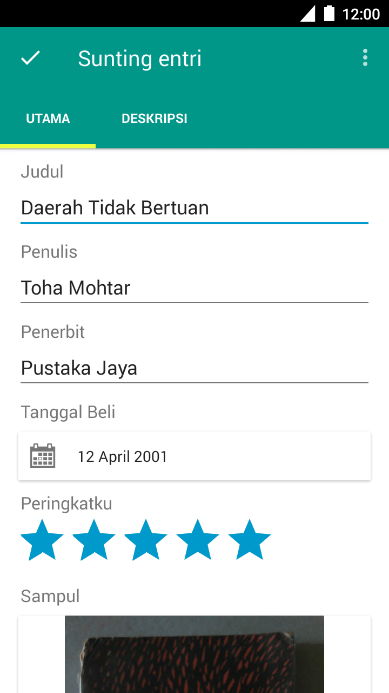

Kaidah¶
Antarmuka Pengguna¶
Layar Koleksi¶
{kind=link}
Menampilkan daftar koleksi dalam grup yang sedang dibuka. Layar awal saat aplikasi Memento dihidupkan.
Layar Sunting Koleksi¶
{kind=link}
Menampilkan struktur koleksi: field, halaman, hubungan, agregasi, dan aturan autofill. Layar tempat menambah atau menyunting struktur koleksi. Sering dijalankan dari Layar Koleksi atau Layar Entri.
Layar Entri¶
{kind=link}
Menampilkan entri-entri dalam koleksi yang sedang dibuka. Sering dijalankan dengan membuka sebuah koleksi, biasanya dari Layar Koleksi.
Layar Tinjau Kartu¶
{kind=link}
Menampilkan field dalam halaman dari entri yang sedang dibuka, dengan tab dan halaman lainnya. Sering dijalankan dari Layar Entri.
Layar Sunting Kartu¶
{kind=link}
Menampilkan field dari halaman yang sedang dibuka, yang tengah disiapkan untuk disunting. Sering dijalankan dari Layar Tinjau Kartu.
Templat¶
Templat adalah berkas berekstensi .template. Templat ini berisi struktur database, metadata, beserta script pemograman.
Catatan
Gambar struktur templat database db-diagram.png dapat ditemukan dalam folder.